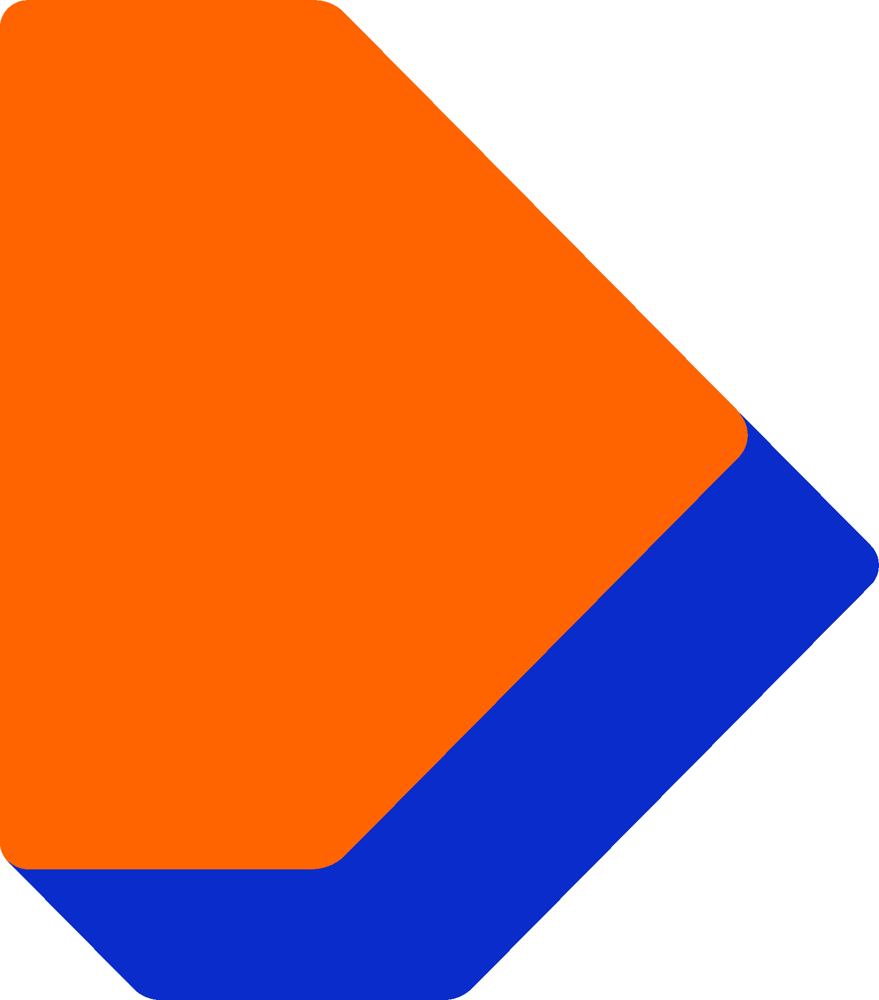

Doe mee
Voor een sterker Wageningen.
Actueel
Laatste nieuws wordt geladen...
Liberaal in uw stad
De VVD Wageningen zet zich in voor vrijheid, verantwoordelijkheid en een sterke lokale gemeenschap. Wij geloven in de kracht van onze inwoners, studenten en ondernemers. Samen bouwen we aan een welvarend en prettig Wageningen voor iedereen.
Lees meer over ons team →Doe Mee met VVD Wageningen!
Denk en praat mee over de toekomst van onze stad. Uw betrokkenheid is waardevol.